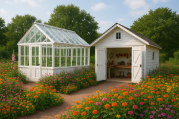

Special Events at Secret Garden Getaway
Our beautiful garden is the perfect place for your special celebrations! We host weddings, birthday parties, and other memorable events throughout the year.
Garden Weddings

Say "I do" surrounded by flowers and greenery! Our garden can host up to 50 guests for your special day.
We provide tables, chairs, and a beautiful outdoor dining area under our patio. Your guests will enjoy fresh, delicious food prepared by our kitchen staff.
Birthday Parties & Celebrations
Celebrate your birthday, anniversary, or family reunion in our garden.
Our event coordinator will help you plan everything from decorations to food. The natural beauty of our garden means you won't need many decorations!
Live Music Nights
Join us for evening concerts during spring and summer. Local musicians perform on our outdoor stage for everybody to enjoy.
Check with us for the schedule of upcoming performances.
Garden Workshops
{kind=link}
We offer fun workshops including:
- Flower Arrangements
- Basic Gardening
- Painting in the Garden
Workshops happen on weekend mornings and include all supplies.
How to Book an Event
Contact us with your date, number of guests, and event type. We recommend booking early, especially for spring and summer weekends.
You can schedule a visit to see our garden in person and meet our lovely team!